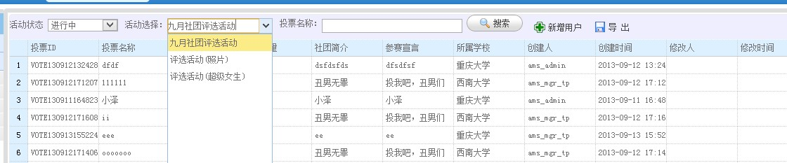
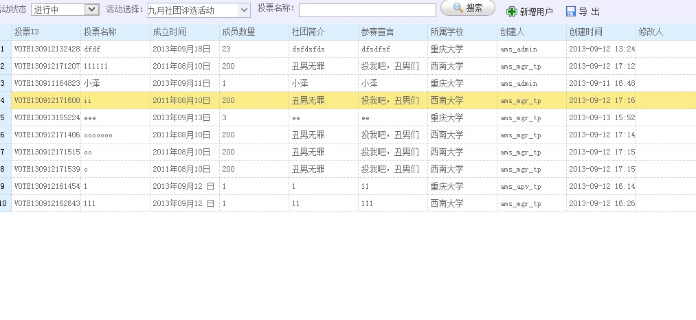
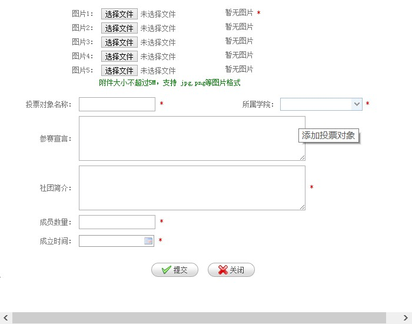
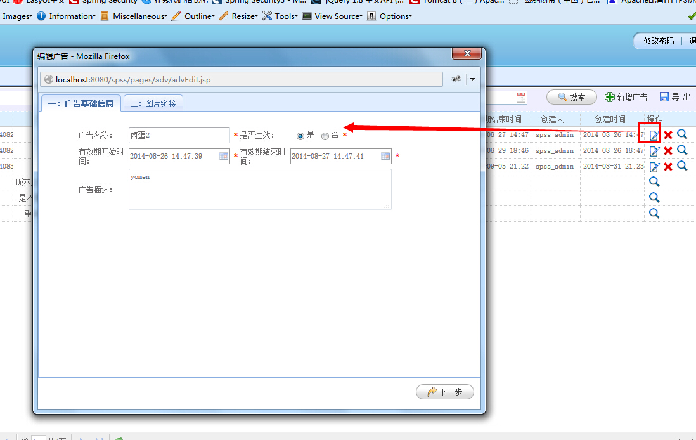
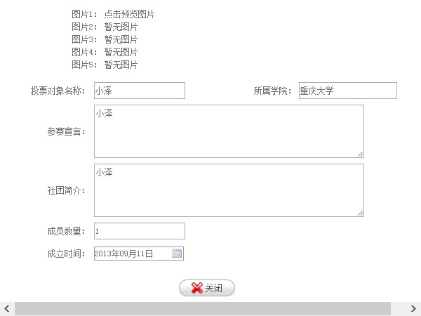
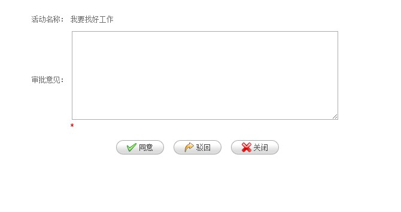
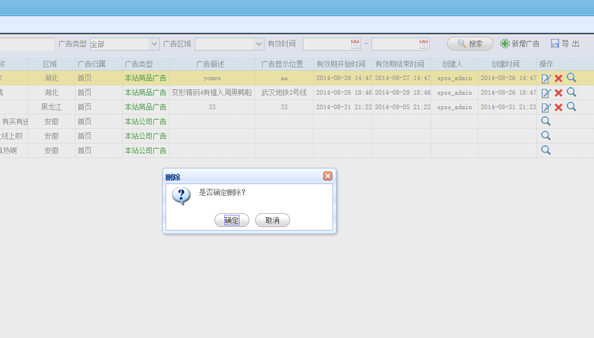
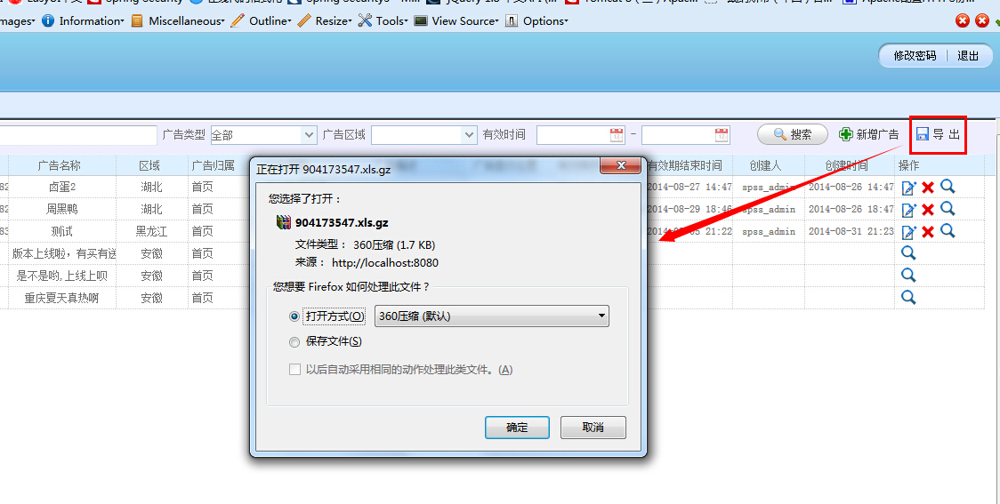

3.2报名用户管理
报名用户管理:主要选择活动进行当前一个活动的报名用户的管理及审批功能及相关数据操作导出报表等。
3.2.1报名用户管理
优惠活动管理员登录AMS系统，在“投票活动管理”模块中新建活动，提交活动完成审核通过已启动状态即可进入报名用户管理进入档期活动的用户管理，参考3.1(投票活动管理)中的介绍。3.2.2当前活动中用户展示
活动选择如图
第一次进入用户管理是获取最近一次进行中的活动作为展示数据
当前活动的数据展示 如图

第一次进入用户管理是获取最近一次进行中的活动作为展示数据
3.2.3新增用户
点击列表上方的“新增用户”按钮，进入到新增用户界面。只有投票活动管理员、超级管理员可以操作“新增用户”功能由于这个属于当前活动模板选择获取的数据所以每个活动不一定数据是一样的，这个图片只能作为参考
如图

必填项：带*号 属于必填项
选填项:未带*号可以作为选填项
点击“提交”按钮，会提交完成的投票对象的保存。
点击“关闭”按钮，退出关闭窗口。
3.2.4修改用户
点击列表上方的“修改用户”按钮，进入到新增用户界面。只有投票活动管理员、超级管理员可以操作“修改用户”功能由于这个属于当前活动模板选择获取的数据所以每个活动不一定数据是一样的，这个图片只能作为参考
如图

必填项：带*号 属于必填项
选填项:未带*号可以作为选填项
点击“提交”按钮，会提交完成的投票对象的保存。
点击“关闭”按钮，退出关闭窗口。
3.2.5复制新建用户
点击列表上方的“复制新建”按钮，进入到新增用户界面。只有投票活动管理员、超级管理员可以操作“复制新建”功能由于这个属于当前活动模板选择获取的数据所以每个活动不一定数据是一样的，这个图片只能作为参考
如图
必填项：带*号 属于必填项
选填项:未带*号可以作为选填项
点击“提交”按钮，会提交完成的投票对象的保存。
点击“关闭”按钮，退出关闭窗口。
3.2.6用户信息详情
点击列表上方的“用户详情”按钮， 只要可以进入菜单的用户都有查看“用户详情”功能由于这个属于当前活动模板选择获取的数据所以每个活动不一定数据是一样的，这个图片只能作为参考
如图

由于这个只是个用户详细信息数据所以所有的用户进入只能查看数据，不可做修改等操作
点击“关闭”按钮，退出关闭窗口。
3.2.7用户审批
点击“审批”按钮，只有被投票用户审批员 、超级管理员可以操作“用户审批”功能。如图 “活动审批”

3.2.8用户删除
点击“删除”按钮,如图“删除当前活动”

可以进行判断删除!如果误删可以点击取消。确定删除点击确定即可
3.2.9当前活动导出
点击报名用户管理列表页面的“导出“按钮,将导出数据生成Excel文件。如下图所示